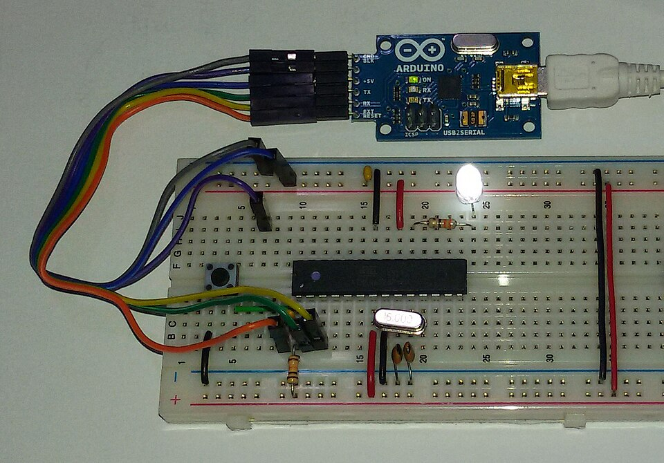

Hoy dejas de usar el LED que viene de regalo…
¡y armas tu propio circuito con cables de verdad!
La idea más importante de hoy
Caudal: normal 💧
Más presión = más agua. Tubería más angosta = menos agua. ¡Igualito que la electricidad!
Tres palabras de electricista
La presión del agua. En tu Arduino son 5 voltios: poquita presión, no te puede hacer daño.
Se mide en voltios (V)
El caudal: cuánta agua pasa. Si pasa demasiada, las cosas se calientan… y se queman.
Se mide en amperios (A)
La tubería angosta que frena el agua. Sirve para cuidar a los componentes delicados.
Se mide en ohmios (Ω)
La regla número uno
Con el camino cortado, el agua no puede dar la vuelta… y el LED no se enciende.
Cuidando a los delicados
Esperando…
Un LED aguanta poquita corriente. ¿Qué pasa si le damos toda la del Arduino?
Con el LED siempre va una resistencia de 220 Ω.
Reglas de electricista profesional
Para poner o cambiar cables, primero desconecta el USB. Siempre.
Antes de enchufar, tu compañero revisa tu circuito (y tú el suyo).
¿Algo huele raro o se calienta? Desconecta y avisa.
Arduino usa 5 voltios: no puede hacerte daño, pero un cable mal puesto sí puede dañar la placa.
Tu nueva mejor amiga

Antes, para unir dos cables había que soldarlos con estaño derretido: lento, caliente y sin vuelta atrás.
La protoboard deja armar circuitos enchufando y desenchufando, como piezas de Lego. Si te equivocas, sacas el cable y listo. 🧱
El secreto de los agujeritos
Regla de oro
Toca cada tarjeta para ver la respuesta.
Por eso el canal del medio existe: para poder poner chips con patitas a los dos lados sin que se toquen.
¡Manos a la obra!
La mejor parte
void setup() { pinMode(13, OUTPUT); } void loop() { digitalWrite(13, HIGH); delay(500); digitalWrite(13, LOW); delay(500); }
Antes el pin 13 prendía la lucecita de adentro.
Ahora prende tu LED, el que armaste con tus manos. 💪
⭐ Proyecto de la sesión
// luz roja: 3 segundos digitalWrite(13, HIGH); delay(3000); digitalWrite(13, LOW); // luz verde: 3 segundos digitalWrite(12, HIGH); delay(3000); digitalWrite(12, LOW); // amarilla: 1 segundo digitalWrite(11, HIGH); delay(1000); digitalWrite(11, LOW);
Tres LEDs, tres resistencias, tres pines: 13, 12 y 11. ¡Y todos comparten el mismo GND!
⭐ Reto de la sesión
Ya sabes prender, apagar y esperar. ¡Eso es todo lo que necesita un show de luces!
Duelo de cerebritos
Lo lograste
Hoy entendiste la electricidad, domaste la protoboard
y armaste un circuito con tus propias manos.
Hasta ahora tu Arduino solo actúa. La próxima le daremos sentidos: sensores, botones… ¡y decisiones!